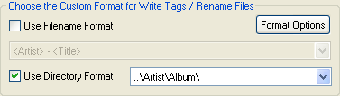

Create Directory

Before Creating directories select one or more files from the list
by
clicking
in the list while
pressing down the Ctrl key or by using the keyboard using Ctrl+Shift+Up
arrow or Ctrl+Shift+Down arrow after selecting an item.
To create folders for mp3s using their tag information:
Use Create Directory Button
or Create Directory from the Tools main program menu
- Select one or more files by clicking in the list while
pressing down the Ctrl key or
use Ctrl+A to select all files.
- Check the Use Directory Format
checkbox and select a format, for
example "..\Artist\Album\".
- Using Create Directory
will
create subfolders in the current location based on their ID3v1.1
or ID3v2.x tags depending on the currently selected Tag info
Tab and the mp3 is moved to
that location.
If you would like to remove the organization of mp3s into
subfolders and bring all the mp3s to the parent directory:
- First use Open
Directory to open the main
parent directory that contains all the subfolders, check Recurse
subdirectories checkbox and click Open button, this will
load all the
mp3 files from all subfolders.
- Select one or more files by clicking in the list while
pressing down the Ctrl key or
use Ctrl+A to select all files.
- Select the Directory Format "..\"
- Using Create Directory
will move all the mp3s to the parent directory and
remove all subfolders, provided they are empty.